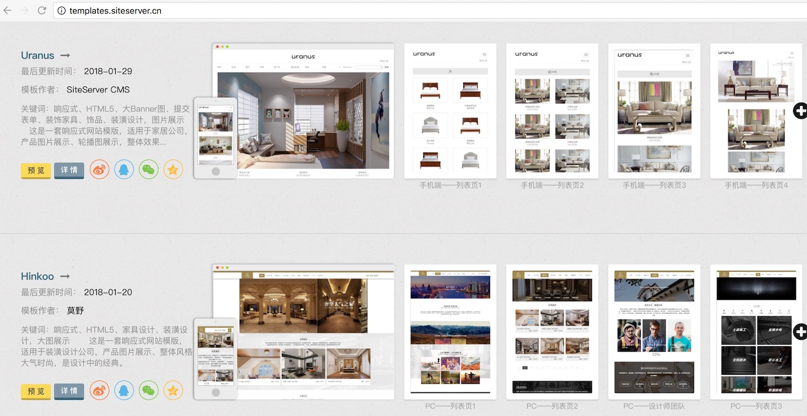

1、公司官网
所有公司动态和SiteServer CMS产品官方资源都可以在这找到入口。
2、官方VIP服务
为了让大家使用SiteServer CMS 产品更有保障，官方提供了三大类VIP服务：
- 网站建设服务：一次建站全终端覆盖，包括PC网站、手机网站、微信公众号、手机App。企业官网、集团网站群、政府网站群、电商平台、移动App、微信公众号
- SiteServer 技术保障服务：从产品安装、升级、培训、二次开发咨询服务到产品Bug的实时修复、性能优化、数据备份再到专题制作、模板嵌套，我们提供全方位立体式的安全保障和技术支持，从而让您安心踏实使用SiteServer CMS。
- 系统定制开发：提供基于需求的定制开发服务，协助客户解决业务系统实施规划、功能及代码优化、平台及数据整合等工作内容。专业的规划团队，提供基于需求的业务系统规划，包括系统设计、数据库设计、业务流程规划等。
3、官方互动交流---QQ群、微信公众号
SiteServer CMS 官方微信公众号：

SiteServer CMS 官方群：186949124 SiteServer CMS 官方模板交流群：424137943
4、官方模板中心
- 响应式模板中心网址：http://templates.siteserver.cn/
- 传统PC模板中心网址：http://moban.siteserver.cn/
SiteServer 响应式模板中心致力于提供最好的响应式网站模板(所有模板均支持PC、平板以及手机)，SiteServer CMS将以最严格的标准对待每套模板，以确保它们符合高质量的设计与功能标准。

5、GitHub开源
网址：https://github.com/siteserver/cms
从这里能获取到产品的源代码，包括最新稳定版本和开发版本的源代码。SiteServer CMS系统也是从2017年5月份才正式免费开源的。